Architecting Android Apps
So my first experiencing really writing code was on Shopify using Ruby on Rails. Rails adheres very strongly to the idea of Covention over Configuration. That is, frameworks should make choices about how things should be structured. For example, rails is an MVC framework which means you have models (which go in app/models), controllers (app/controllers), and views (app/views). Of course, you can mess with this but the point is that there is an expected place to put things.
Android is part of the Java ecosystem, and it doesn't seem to make any choices about how to structure... anything. This. Drives. Me. Nuts. You can put any code for anything anywhere. And there really doesn't seem to be a good reason for this. I'm currently working on Shopify for Android and our code doesn't really have a good structure at the moment. We have some folders that contain code grouped by feature, like orders and we have other folders that contain code based on function (views).
I feel that the job of a framework, (which admitedly Android... kind of is) is to make the job of a programmer easier. The hardest part of being a programmer is managing complexity. Configuration introduces compleity. Convention removes it
Our team is probably going to move to something like this: https://github.com/codepath/android_guides/wiki/Organizing-your-Source-Files, but it doesn't quite feels as nice as rails.
My First Experience being a Dungeon Master
So recently a few of my friends decided that we wanted to get into Dungeons and Dragons. This was mostly due to enjoying Munchkin a lot.
I started doing some research on the best way to get into D&D. First I needed to pick an edition. 3.5e seems to be a clear favourite in the past, but I had heard that 5e was simpler than any previous version. Finally I found a glowing review of the DnD Starter Kit

Turns out to have been a great choice. The kit includes a full set of dice, 5 pre-made characters, a rule book and campaign book and it was like 20$.
First time DM
I'm really glad the characters were pre-made. The rules are complicated enough for a first time group without having to deal with making a characters.
The campaign book was very helpful to me as a DM. I was really worried I would be able to improvise fast enough or well enough to keep the game flowing, but that turned out to be a bit of an over reaction.
Knowing all the rules is hard! I had to constantly check to see what actions a player could take, how ranged combat works and what kind of bonuses people would get.
All in all though, I had a really fun time and I think the rest of the party did too!
Book Recommendations from 2014
Since I enjoy reading and I enjoy hearing about what others are reading, I figured I should probably put up a list somewhere of the books that I enjoyed reading during 2014. If you have any recommendations, please post them in the comments! One can never have too many books on one's list of books to read.
The Martian
If you have to read one book from my list, I recommend it be this one. It only took me 2 days (and 2 rather sleepless nights) to get through it. It's a fantastic thriller and as a bonus you get to learn about Mars since most of the science is accurate. The book is about the first manned mission to Mars, and as you might imagine Something Goes Wrong.
The Laundry Files (Series)
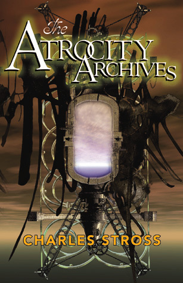
This series is so freakin' good. It's basically James Bond + Lovecraftian Horrors + Comedy and it's pure gold. You follow around Bob Oliver Francis Howard (aka B.O.F.H) who lives in a world where the right piece of code can be used to summon Eldritch horrors from the deep. But of course there's a government agency tasked with protecting us all from having our brains eaten out.
The Coming Swarm
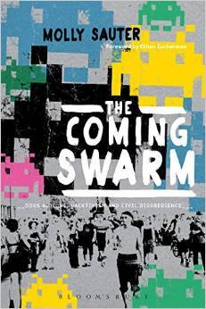
I'm not finished this one yet, but it's been a very interesting read so far. The author make a compelling argument that DDoS actions should be considered a political act just like a sit in or a blockade.
The Girl With the Dragon Tattoo
This book was very slow to start, but it quickly got hard to put down. There are some pretty disturbing scenes, so if that's not your thing I don't recommend it. If you can stomach it though, it's a pretty good read with lots of really good twists.
Sufrace Detail
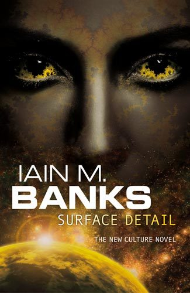
I love Iain M Banks. All of The Culture novels are fantastic, and this one is no exception. The plots are too numerous to list, but one of the fascinating ideas in this book is that of a Virtual Hell. If you suppose that minds can be simulated and run on computers, there's no reason why you couldn't digitize someone's mind before they die and then upload it to a virtual hell if they had failed to live a good life. If you've read any of other culture novels, you'll enjoy getting a look at what a Mind with some severe psychopathic tendencies looks like and how it can exist in the Culture.
Count Zero
This is a sequel (kind of) to Neuromancer, but all of the characters are different. I found this book much easier to follow compared to Neuromancer, but Gibson still writes in a way that I find very difficult to follow. My friend said it best when he described it as "poetry"
How to propose to an engineer
So several months ago I had decided that I was going to ask my girlfriend to marry me. BUT we have been together for 6.5 years at this point so I needed to make sure it was really memorable. The first step was to pick a ring. Thankfully I met a jeweller at Modlab who 3D prints rings: Fused Elements. Well, sort of. She 3D prints the ring in wax and then uses that to make a mould which she fills with molten metal. Upon hearing that I KNEW that's where I would get the ring. (Bonus: I can get the ring re-made in the event of catastrophic failures)
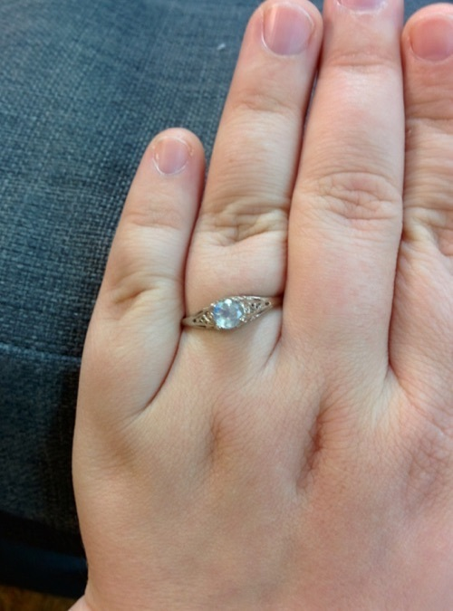
The ring!
One day on reddit I saw this really fantastic ring box that someone had made involving a mechanical iris that looked fantastic. You can check out the whole album of the build process here: https://imgur.com/a/3Mu8J
After humming and hawing for a bit I came up with a plan to build a series of boxes to hold the ring. My fiancé likes unwrapping things so having many layers was essential. This was my first plan
- Stage 1: Original ring box (they are so iconic)
- Stage 2: 3d printed iris box like this one: http://www.thingiverse.com/thing:140048
- Stage 3: Laser cut acrylic iris box like this one: http://www.instructables.com/files/orig/FVO/YGOP/HSICZZ6P/FVOYGOPHSICZZ6P.pdf but in the shape of a heart
- Stage 4: Wooden box containing a USB key with all the design files
But like all plans it fell apart as soon as it encountered reality.
STAGE 1.0
This is the only part of the plan that went off without a hitch! Working with Fused Elements was really easy and the ring turned out beautifully.
STAGE 2.0
The first problem I encountered was modifying the existing 3d designs for the iris box so that the original ring box would fit. (A secondary problem was gaining access to a 3d printer, but thankfully a good friend of mine had recently acquired one). I had to enlarge the designs by close to 200% so that the box would fit through the inner ring of the iris. But in doing this I ended up with a box that had a truly gigantic outer diameter. It was getting close to 20cm and what was just stage 2!
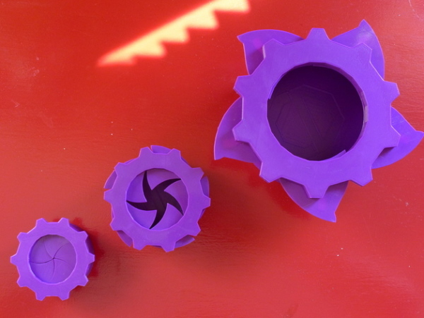
Photo of the iris box I wanted to use at first.
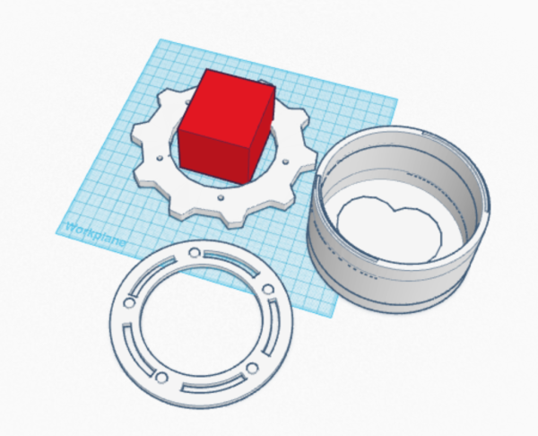
TinkerCAD
(insert picture here)
STAGE 2.1
After many months of searching through thingiverse (I may be embellishing) I found this really cool looking parametric twisted star box which had some openscad files I could modify and use.
Printing this turned out to be quite an ordeal. My girlfriend was away for a weekend so I signed out the Ultimaker from Art Engine (my local makerspace) and started printing. But this box was actually pretty big and as anyone who's done any 3d printing will tell you, printers can be finicky. Here are the 3d aborted bases I have. Only one was intentional. The other too failed when the filament got twisted and stopped feeding properly.
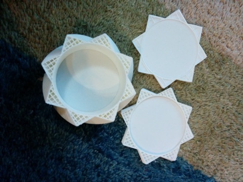
But 4th times the charm! You can see the finished box below
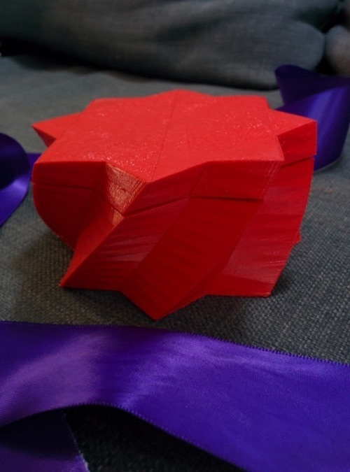
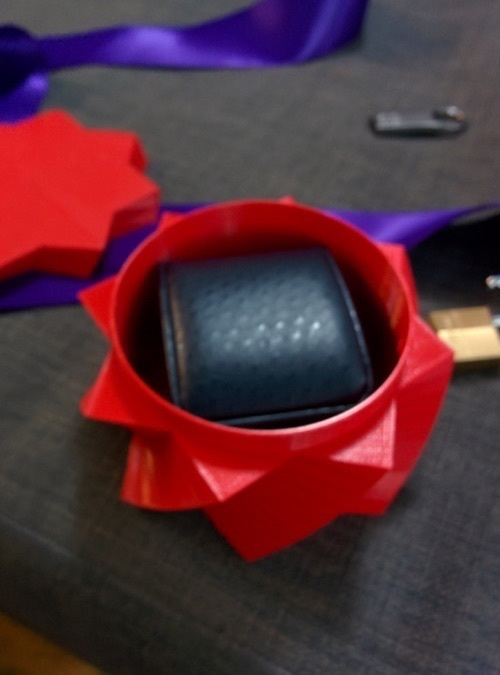
The ring box fits! I messed up a tiny bit in modifying the box. The lid should have had a slightly smaller opening at the top since where the twists meet there's a tiny bit of a gap.
STAGE 3.0
My initial plan was to have a second box with an mechanical iris based on this cool design I had found on Instructables (http://www.instructables.com/id/Mechanical-iris-v20/?ALLSTEPS). That would make the lid and the rest of the box would be made by stacking sheets of material that I would cut into shape on a laser cutter and hold together with nuts and bolts.
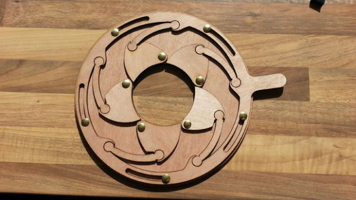
But once again I completely under estimated how large this would end up making my box. Stage 2 had to fit through that inner hole and once I'd scaled up the design it wouldn't fit on the bed of the laser cutter any more...
STAGE 3.1
I needed to make this piece just as special as the other stages so I ended up choosing to make the box heart shaped. Not just regular heart shaped, but a heart based on the equation y=|x|+sqrt(1-x²) and y=|x|-sqrt(1-x²) from -1 to 1 (graphed on Wolfram Alpha). When my fiancé and I first started dating I liked to show off so I had sent her that equation. She liked it enough to have a large poster of it made for her bedroom.
With a shaped picked out I started designing the box itself in inkscape. You can see the end result below.
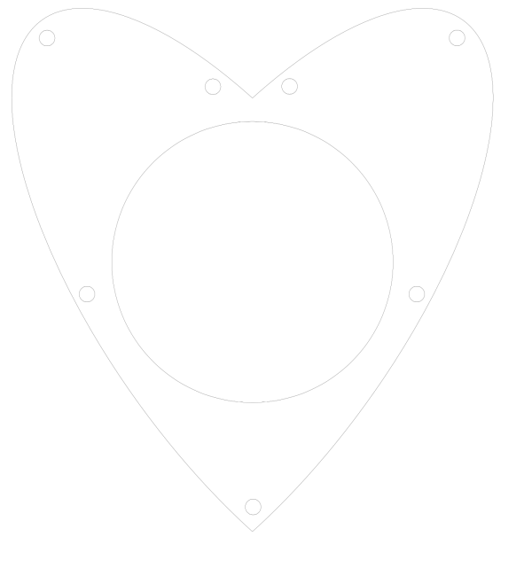
As I was working on the design I needed to pick the material I wanted to use. I ended up choosing 1/8" opaque red acrylic. I probably should have figured out where to get some before setting my heart on it though... I ended up calling a the following places in Ottawa that sell acrylic to try and find some:
- Canus Plastics
- Laird Plastics
- Plastics & Signs of Ottawa
I ended up going with Laird because they could get it for me in a week. The only problem I ran into here was that I had to order an entire 4' x 8' sheet of red acrylic... Thankfully Laird cut it into 2' x 1' sheets for me. Transporting a sheet of material that huge is difficult on a bike and I can only fit a 2' x 1' sheet in the laser cutter anyway.
After picking up the sheets I started prototyping my final design in cardboard. I cut out 5 hearts in cardboard and checked that the holes I had cut fit the screws, and that stage 2 would fit in the whole properly. Everything seemed to be perfect so I cut out a single heart in acrylic. It fit the box and the screws slid through the holes. So I cut out the rest of the hearts I could on that first sheet of acrylic and...
They didn't fit together. This is the first time I learned about the importance of tolerances. The bolt holes needed to have more clearance. So I modified the designs to add an extra few mm of clearance. I cut out another sheet of hearts and tried putting them together. They fit together perfectly! So I cut another sheet and... promptly ran into problems with tolerances again. Thankfully I was able to wiggle the second sheet worth of hearts down so at least I didn't waste any hearts, but for the next couple batches I increased the bolt hole size again.
The last part of this stage was to come up with a lid. Initially, I envisioned using a gear shape for the lid and having a second lower layer that was that had a hole same upper gear shape except cut out again after having been rotated a bit. This way the lid would slide down a layer and could rotate about a gear tooth's worth.
Turns out doing that is hard. Most of the gears that I could generate were meant to be used as actual gears, I needed something more aesthetically pleasing. I ended up going with a simplified version of the above design. I had a circle with two small tabs offset by 180 degrees. Below it I had a circular whole with two quarters of a larger circle cut out so that the tabs of the lid could rotate.
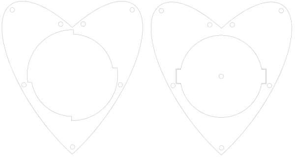
This is the design I went with, but it suffers from a few... problems. The second layer cut out should be a bit bigger so that the lid can rotate better. Also the lid needs to be a bit smaller. I also went with an acrylic handle that I cut out, but I think a set of finger sized holes in the lid would work even better.
Anyway, here's the final product:
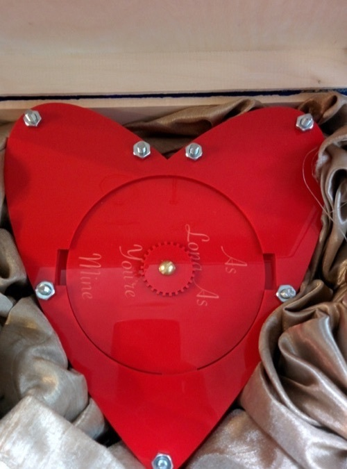
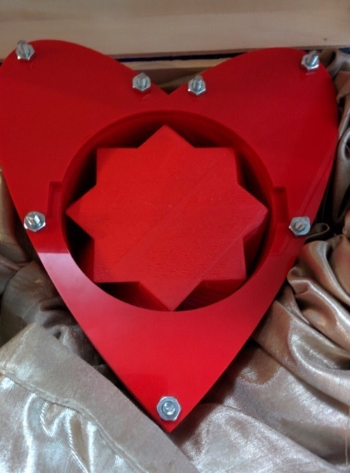
STAGE 4.0
Now that I had dimensions from stage 3.1 I could try and come up with a box that would fit it. I wanted something wooden, but it turns out that finding a large wooden box in Ottawa is kinda hard. I ended up going with the largest one that they had at Michael's and painting Tardis blue.
A few months earlier I had given my girlfriend a key in order to get her excited. I needed some way to attach a latch to the box. I was super concerned that I wouldn't be able to find something that would work, but I got lucky and they had one that worked perfectly at the hardware store.
I also wanted to use some of the design files I had gotten from Fused Elements, so I decided to engrave them with the laser cutter on the lid of stage 4. It turned out really well, although I did have to come up with a way to have the lid stay flat while still attached to the base.
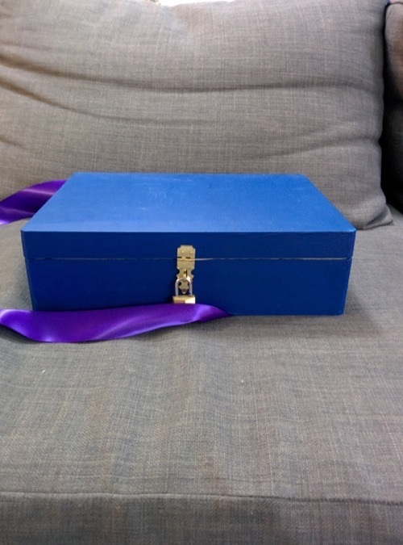
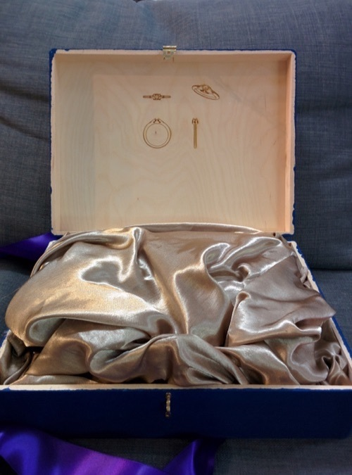
I hope you dear reader might be inspired in your own proposals (if that's your thing) just as I was when I saw the CNC'd Iris box.
Installing Ubuntu 14.04 on a 15" late 2013 Macbook Pro (with Full Disk Encryption)

SO I've been looking but I have yet to find a sufficiently detailed guide for getting Ubuntu running on a retina macbook pro, especially one that has full disk encryption enabled. Hopefully this document will help others looking to dual boot as well as serve as a reference for me in the future when I inevitably forget all of this.
BEFORE YOU DO ANYTHING YOU NEED TO HAVE A BACKUP!
The first step was installing a better EFI boot loader (although I'm not sure if this step is strictly necessary anymore). In the past that would involve rEFIt, but it seems to have lots its maintainers. Instead I've gone with rEFInd. Their site is pretty 1990s, but the software itself is pretty good. I mostly just followed the instructions on their installation page and their page on Yosemite, although I did have to make a few changes so that booting wouldn't take 30 extra seconds. Note, I had to install rEFInd to my ESP partition
- First step is to download rEFInd (version 0.8.3 as of this article) and unzip it somewhere.
- Now mount the ESP partition by making a new directory ( mkdir /Volumes/esp ) and then running: sudo mount -t msdos /dev/disk0s1 /Volumes/esp
- Next cd into the directory you unzipped rEFInd and run ./install.sh --esp
- Now edit /Volumes/esp/EFI/refind/refind.conf and uncomment the line about dont_scan_volumes and change it to be dont_scan_volumes "foo,bar"
- Next move /Volumes/esp/EFI/refind to /Volumes/esp/EFI/BOOT
- Finally move /Volumes/esp/EFI/BOOT/refindx64.efi (I think) to /Volumes/esp/EFI/BOOT/bootx64.efi
- REBOOT and enjoy your shiny FOSS boot manager
The next step is to format your hard drive so that it has 3 new partitions for Ubuntu. I like to use full disk encryption in linux too which means that I need a separate /boot partition in addition to / and swap (although frankly I'm not sure I need swap when I have 16GB of RAM)
BE CAREFUL HERE. I managed to bork my Mac installation by trying format my disk from the ubuntu live CD. Thankfuly I had a time machine backup.
I ended up formatting my disk to my liking by booting in to OS X's recovery mode and creating 3 new partitions. My /boot was only 1GB, swap was 16GB and I set aside about 90GB for the main installation.
Next you need to format a USB stick with the ubuntu installation image. The instructions I followed are from here: http://www.ubuntu.com/download/desktop/create-a-usb-stick-on-mac-osx
Reboot with your newly formatted USB and select it from the options presented.
Choose 'Something else' when asked how to install ubuntu. Click on the 1 GB partition and use it as /boot. Next choose the large partition you created for linux and choose the option "use as physical volume for encryption"
Also, make sure you choose the partition you have as /boot for the installation of the boot loader. YOU DO NOT WANT TO LEAVE IT AT ITS DEFAULT
Next post I'll include information on how to configure your new dual boot computer!
subscribe via RSS